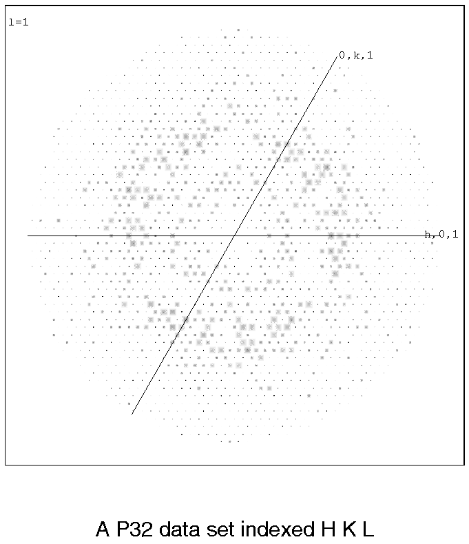
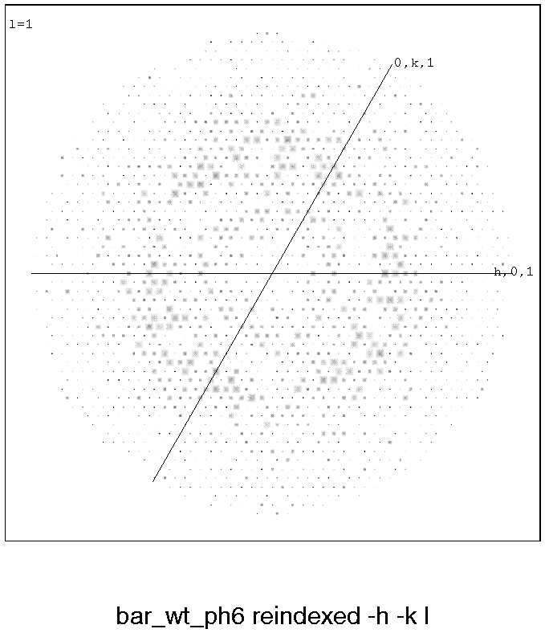
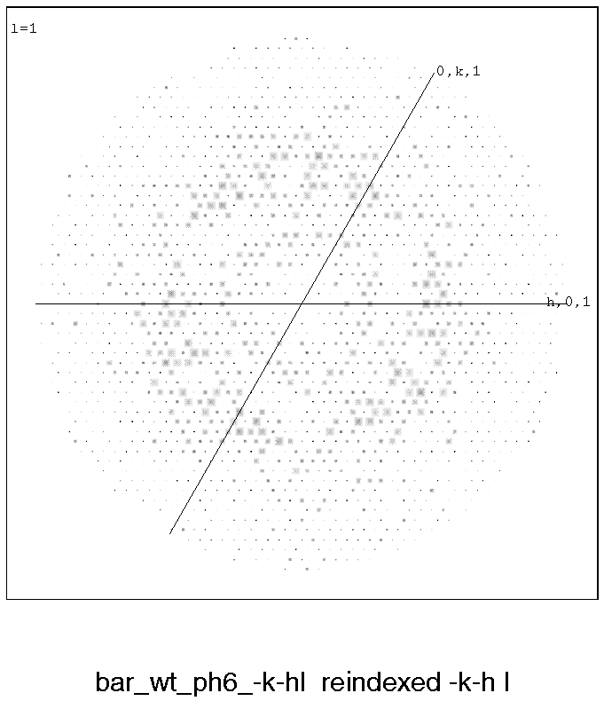
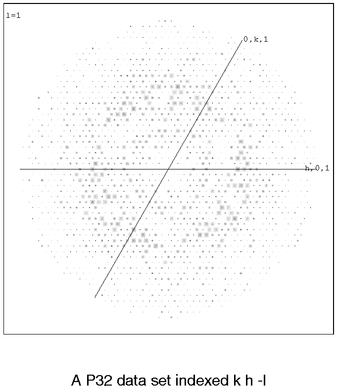
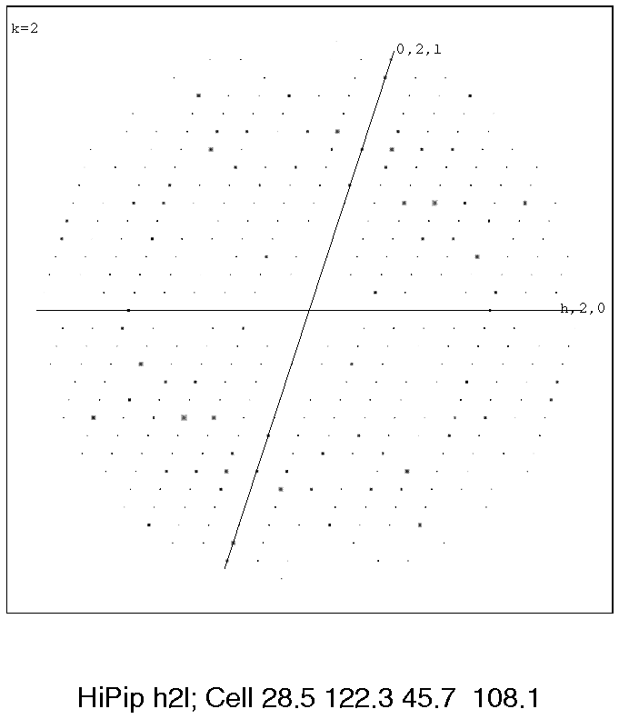
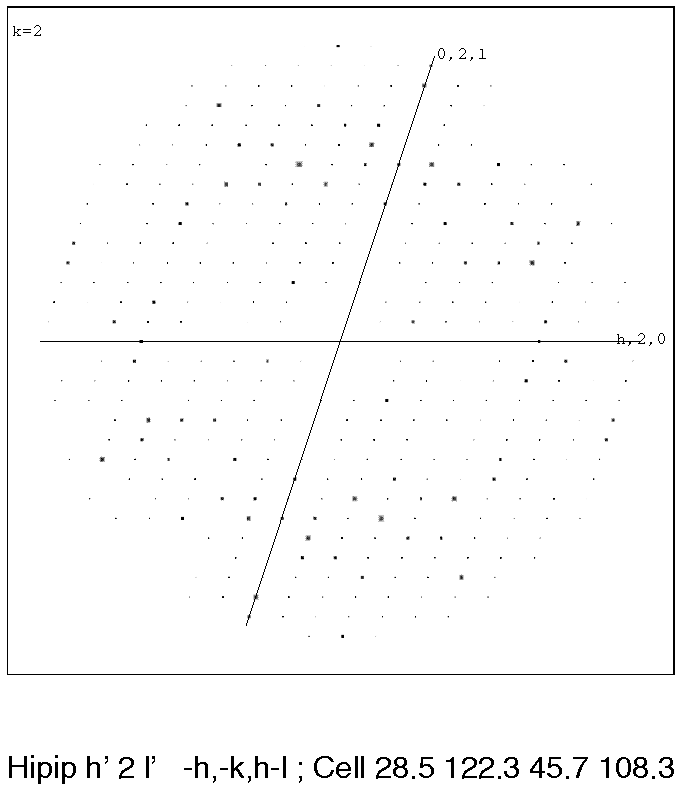

|
CCP4i: Graphical User Interface |
| Reindexing |
General Remarks
It is quite common to find that the diffraction from subsequent crystals
for a protein do not apparently merge well. There are many physical reasons
for this, but before throwing the data away it is sensible to consider
whether another indexing regime could be used. For illustrations and examples
see HKLVIEW-examples below.
For documentation on re-indexing itself, and some hints, see also
REINDEX.
For orthorhombic crystal forms with different cell dimensions
along each axis you can usually recognise if the next crystal is the same as the last
and see how to transform it (remember to keep your axial system right-handed!).
In P1 and P21 there are many
ways of choosing axes,
but they should all generate the same crystal volume. Use
MATTHEWS_COEF or some other
method to check this - if the volumes are not the same, or at least related by
integral factors, you have a new form.
If they are the same it is recommended to plot some sections of the reciprocal
lattice; you can often see that the patterns will match if you rotate in some way
(see
HKLVIEW-examples below). A common change
in P21
or C2 where the twofold axis will be constant, is that
a*new = a*old
+ c*old, and c*new
must be chosen carefully.
One very confusing case can arise if the length of (a*+nc*) is almost equal
to that of a* or nc*, but it should be possible to sort out from the diffraction pattern
plots.
??? Should there be something about real and reciprocal axes? Look at both - see if any
are preserved????
Confusion arises mostly when two or more axes are the same length, as in the
tetragonal, trigonal, hexagonal or
cubic systems.
In these cases any of the following definitions of axes is equally valid and likely
to be chosen by an auto-indexing procedure. The classic description of this is that
these are crystals where the Laue symmetry is of a lower order than the apparent
crystal lattice symmetry.
| real axes: | (a,b,c) | or | (-a,-b,c) | or |
(b,a,-c) | or | (-b,-a,-c) |
| reciprocal axes: | (a*,b*,c*) | or | (-a*,-b*,c*) | or |
(b*,a*,-c*) | or | (-b*,-a*,-c*) |
N.B. There are alternatives where other pairs of symmetry operators
are used, but this is the simplest and most general set of operators. For example:
in P4i (-a,-b,c) is equivalent to (-b,a,c), or in P3i
(-a,-b,c) is equivalent to (-b,a+b,c).
.N.B. In general you
should not change the hand of your axial system; i.e. the determinant of the
transformation matrix should be positive, and only such transformations are discussed here.
The crystal symmetry may mean that some of these systems are already equivalent:
For instance, if (h,k,l) is equivalent to (-h,-k,l), the axial system
pairs [(a,b,c) and (-a,-b,c)] and
[(b,a,-c) and (-b,-a,-c)]
are indistinguishable. This is the case
for all tetragonal, hexagonal and cubic spacegroups.
If (h,k,l) is equivalent to (k,h,-l), the axial system pairs
[(a,b,c) and (b,a,-c)] and
[(-a,-b,c) and (-b,-a,-c)]
are indistinguishable. This is true for
P4i2i2, P3i2,
P6i22 and some cubic spacegroups.
If (h,k,l) is equivalent to (-k,-h,-l), the axial system pairs
[(a,b,c) and (-b,-a,-c)] and
[(-a,-b,c) and (b,a,-c)]
are indistinguishable. This is only true for
P3i12 spacegroups.
See detailed descriptions below.
Lookup tables
Here are details for the possible systems:
- All P4i and related 4i
space groups:
(h,k,l) equivalent to (-h,-k,l) so we only need to check:
| real axes: | (a,b,c) | and | (b,a,-c) |
| reciprocal axes: | (a*,b*,c*) | and | (b*,a*,-c*) |
i.e. check if reindexing (h,k,l) to (k,h,-l) gives a better match to previous data sets.
| space group number | space
group | point group | crystal system |
|---|
| 75 | P4 | PG4 | TETRAGONAL |
| 76 | P41 | PG4 | TETRAGONAL |
| 77 | P42 | PG4 | TETRAGONAL |
| 78 | P43 | PG4 | TETRAGONAL |
| 79 | I4 | PG4 | TETRAGONAL |
| 80 | I41 | PG4 | TETRAGONAL |
- For all P4i2i2 and related
4i2i2
space groups:
(h,k,l) is equivalent to (-h,-k,l) and (k,h,-l)
and (-k,-h,-l) so any choice of axial system will give identical data.
| space group number | space
group | point group | crystal system |
|---|
| 89 | P422 | PG422 | TETRAGONAL |
| 90 | P4212 | PG422 | TETRAGONAL |
| 91 | P4122 | PG422 | TETRAGONAL |
| 92 | P41212 | PG422 | TETRAGONAL |
| 93 | P4222 | PG422 | TETRAGONAL |
| 94 | P42212 | PG422 | TETRAGONAL |
| 95 | P4322 | PG422 | TETRAGONAL |
| 96 | P43212 | PG422 | TETRAGONAL |
| 97 | I422 | PG422 | TETRAGONAL |
| 98 | I4122 | PG422 | TETRAGONAL |
- All P3i and R3:
(h,k,l) not equivalent to
(-h,-k,l) or (k,h,-l) or (-k,-h,-l) so we need to check all 4 possibilities:
| real axes: | (a,b,c) | and | (-a,-b,c) | and | (b,a,-c) | and | (-b,-a,c) |
| reciprocal axes: | (a*,b*,c*) | and | (-a*,-b*,c*) | and | (b*,a*,-c*) | and | (-b*,-a*,c*) |
i.e. reindex (h,k,l) to (-h,-k,l) or (h,k,l) to (k,h,-l)
or (h,k,l) to (-k,-h,-l).
N.B. For trigonal space groups, symmetry equivalent reflections can be conveniently described as
(h,k,l), (k,i,l) and (i,h,l) where i=-(h+k). Replacing the 4 basic sets with a symmetry equivalent gives a bewildering range of possibilities!.
| space group number | space
group | point group | crystal system |
|---|
| 143 | P3 | PG3 | TRIGONAL |
| 144 | P31 | PG3 | TRIGONAL |
| 145 | P32 | PG3 | TRIGONAL |
| 146 | R3 | PG3 | TRIGONAL |
- All P3i12:
(h,k,l) already equivalent to (-k,-h,-l)
so we only need to check:
| real axes: | (a,b,c) | and | (b,a,-c) |
| reciprocal axes: | (a*,b*,c*) | and | (b*,a*,-c*) |
i.e. reindex (h,k,l) to (k,h,-l) which is equivalent here to reindexing (h,k,l)
to (-h,-k,l).
| space group number | space
group | point group | crystal system |
|---|
| 149 | P312 | PG312 | TRIGONAL |
| 151 | P3112 | PG312 | TRIGONAL |
| 153 | P3212 | PG312 | TRIGONAL |
- All P3i21 and R32:
(h,k,l) already equivalent
to (k,h,-l) so we only need to check:
| real axes: | (a,b,c) | and | (-a,-b,-c) |
| reciprocal axes: | (a*,b*,c*) | and | (-a*,-b*,-c*) |
i.e. reindex (h,k,l) to (-h,-k,l).
| space group number | space
group | point group | crystal system |
|---|
| 150 | P321 | PG321 | TRIGONAL |
| 152 | P3121 | PG321 | TRIGONAL |
| 154 | P3221 | PG321 | TRIGONAL |
| 155 | R32 | PG32 | TRIGONAL |
- All P6i:
(h,k,l) already equivalent to (-h,-k,l)
so we only need to check:
| real axes: | (a,b,c) | and | (b,a,-c) |
| reciprocal axes: | (a*,b*,c*) | and | (b*,a*,-c*) |
i.e. reindex (h,k,l) to (k,h,-l).
| space group number | space
group | point group | crystal system |
|---|
| 168 | P6 | PG6 | HEXAGONAL |
| 169 | P61 | PG6 | HEXAGONAL |
| 170 | P65 | PG6 | HEXAGONAL |
| 171 | P62 | PG6 | HEXAGONAL |
| 172 | P64 | PG6 | HEXAGONAL |
| 173 | P63 | PG6 | HEXAGONAL |
- All P6i2:
(h,k,l) already equivalent to (-h,-k,l)
and (k,h,-l) and (-k,-h,-l) so we do not need to check.
| space group number | space
group | point group | crystal system |
|---|
| 177 | P622 | PG622 | HEXAGONAL |
| 178 | P6122 | PG622 | HEXAGONAL |
| 179 | P6522 | PG622 | HEXAGONAL |
| 180 | P6222 | PG622 | HEXAGONAL |
| 181 | P6422 | PG622 | HEXAGONAL |
| 182 | P6322 | PG622 | HEXAGONAL |
- All P2i3 and related 2i3
space groups:
(h,k,l) already equivalent to (-h,-k,l) so we only need to check:
| real axes: | (a,b,c) | and | (b,a,-c) |
| reciprocal axes: | (a*,b*,c*) | and | (b*,a*,-c*) |
i.e. reindex (h,k,l) to (k,h,-l).
| space group number | space
group | point group | crystal system |
|---|
| 195 | P23 | PG23 | CUBIC |
| 196 | F23 | PG23 | CUBIC |
| 197 | I23 | PG23 | CUBIC |
| 198 | P213 | PG23 | CUBIC |
| 199 | I213 | PG23 | CUBIC |
- All P4i32 and related 4i32
space groups:
(h,k,l) already equivalent to (-h,-k,l) and (k,h,-l)
and (-k,-h,-l) so we do not need to check.
| space group number | space group | point group |
crystal system |
|---|
| 207 | P432 | PG432 | CUBIC |
| 208 | P4232 | PG432 | CUBIC |
| 209 | F432 | PG432 | CUBIC |
| 210 | F4132 | PG432 | CUBIC |
| 211 | I432 | PG432 | CUBIC |
| 212 | P4332 | PG432 | CUBIC |
| 213 | P4132 | PG432 | CUBIC |
| 214 | I4132 | PG432 | CUBIC |
Changing hand
Test to see if the other hand is the correct one:
Change x,y,z for (cx-x, cy-y, cz-z)
Usually (cx,cy,cz) = (0,0,0).
Remember you need to change the twist on the screw-axis stairs for
P3i, P4i, or
P6i!
P21 - to P21; For the half step of 21 axis,
the symmetry stays the same.
P31 - to P32
P32 - to P31
P41 to P43
(P42 - to P42: Half c axis step)
P43 -to P41
P61 to P65
P62 - to P64
(P63 - to P63)
etc.
In a few non-primitive spacegroups, you can change the hand and not change
the spacegroup by a cunning shift of origin:
- I41
- (x,y,z) to (-x,1/2-y,-z)
- I4122
- (x,y,z) to (-x,1/2-y,1/4-z)
- F4132
- (x,y,z) to (3/4-x,1/4-y,3/4-z)
Plus some centric ones:
- Fdd2
- (x,y,z) to (1/4-x,1/4-y,-z)
- I41md
- (x,y,z) to (1/4-x,1/4-y,-z)
- I41cd
- (x,y,z) to (1/4-x,1/4-y,-z)
- I4bar2d
- (x,y,z) to (1/4-x,1/4-y,-z)
PICTURES
Full size versions of the example pictures can be viewed by clicking on the iconised
ones.
|

|
A P32 data set indexed h,k,l |
|
 |
The same P32 data set, reindexed -h,-k,l |
|
 |
The same P32 data set, reindexed -k,-h,l |
|
 |
The same P32 data set, reindexed k,h,-l |
|

|
Monoclinic data set, HKLVIEW h,2,l |
|
 |
The same monoclinic data set, reindexed -h,-k,h-l |


{kind=link}
{kind=link}
{kind=link}
{kind=link}
{kind=link}
{kind=link}